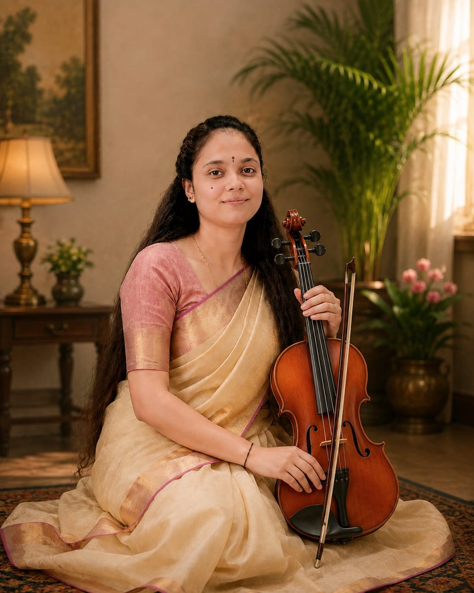

GUEST GURU
Suleiman
Bansuri / Hindustani Flute
Guides students in breath control, melodic phrasing, raga expression and traditional flute practice.THE GUIDING LIGHTS OF OUR ACADEMY
Our featured young musicians represent the next generation of Indian classical artists, bringing tradition, discipline and fresh energy to every lesson.
GURU–SHISHYA PARAMPARA
At Kalyani Indian Traditional Music Academy, our gurus nurture both musical skill and respect for tradition.
Bansuri / Hindustani Flute
Guides students in breath control, melodic phrasing, raga expression and traditional flute practice.
Indian Classical Vocal
Focuses on swara, tala, voice culture, raga development and the guru–shishya learning tradition.
Hindustani Sitar
Introduces students to raga, alap, jor, jhala and the expressive techniques of the sitar.
Tabla & Hindustani Rhythm
Builds strong foundations in bols, theka, laya, taal and confident rhythmic accompaniment.
Indian Classical Violin
Encourages young learners through disciplined practice, melody, bowing technique and performance confidence.
Sarod / Hindustani Classical
Inspires students through raga interpretation, traditional repertoire, stage discipline and instrumental expression.OUR TEACHING BELIEF
Every class is a journey of listening, practice, discipline and discovery.
LEARN WITH GUIDANCE